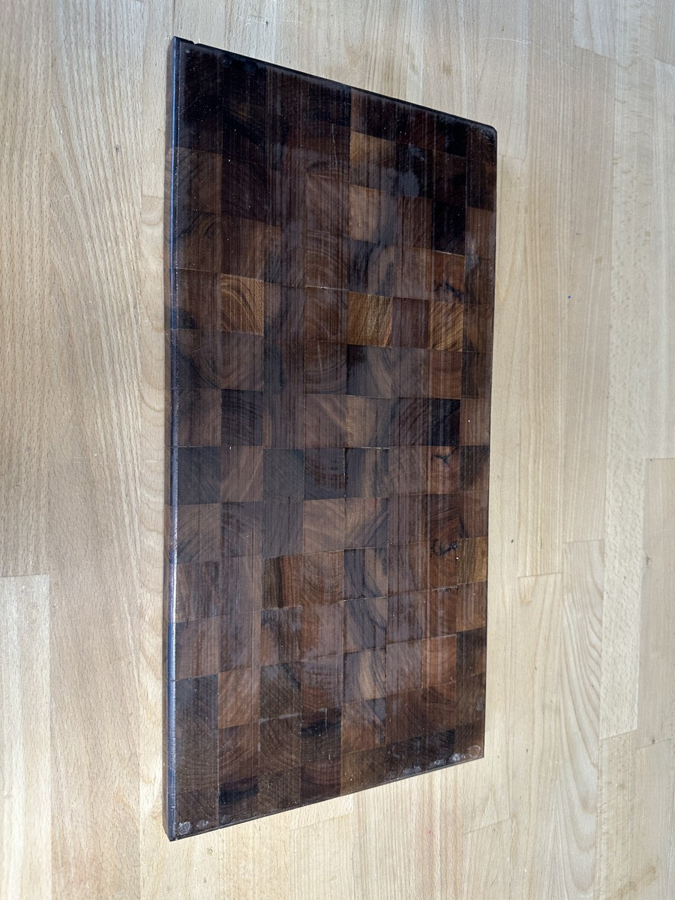
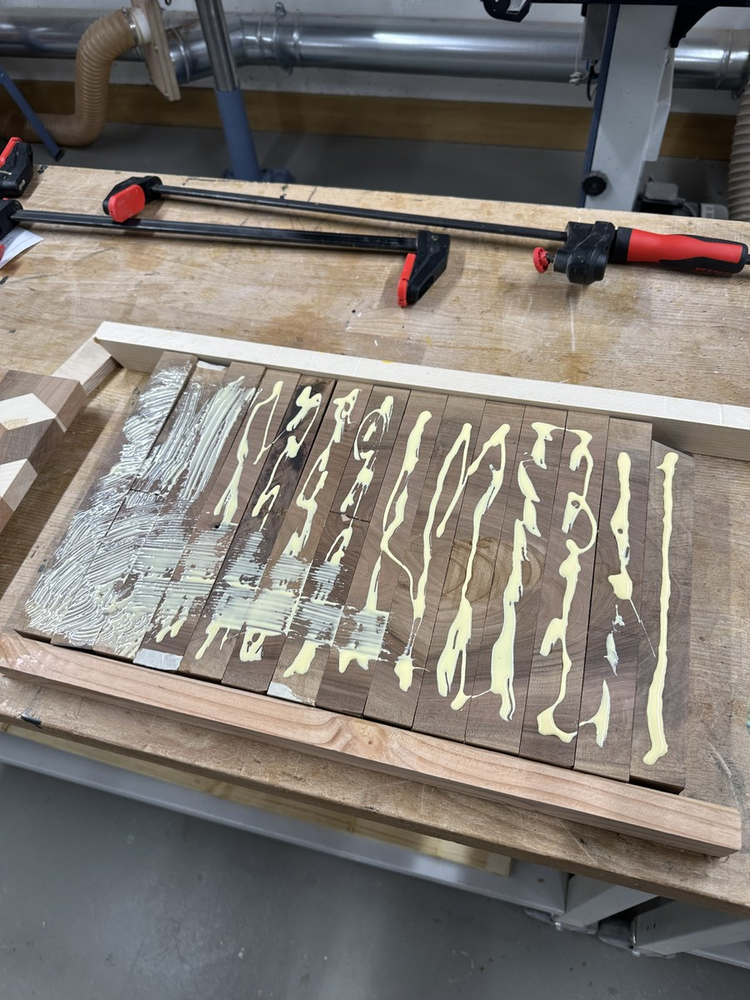
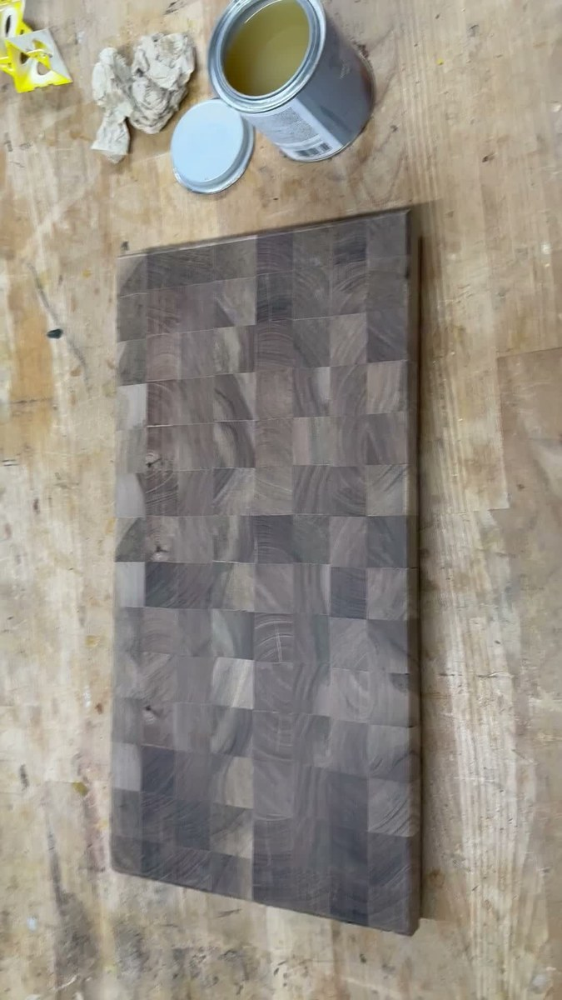

A step-by-step woodworking build log of a 45 cm × 27 cm × 2.5 cm end-grain butcher block crafted from European Walnut (Juglans regia). Engineered with vertical wood fibers to preserve fine chef knives, featuring a taped-caul alignment matrix, integrated perimeter juice groove, and custom "Handmade in Zürich" laser insignia.
Project Specifications & Workshop Parameters
Final Dimensions
45.0 cm length × 27.0 cm width × 2.5 cm thickness (Mass: ~3.1 kg)
Grain Orientation
True End-Grain Matrix — Vertical fiber capillaries facing the cutting surface for self-healing knife durability
Block Count & Array
135 individual blocks arranged in a 15-column × 9-row grid (each cube approximately 30 mm × 30 mm × 25 mm)
Timber Species
Swiss / European Walnut (Juglans regia), premium dense heartwood
Grain Movement Strategy
Alternating annual ring orientation (opposing growth curvature) to balance seasonal moisture expansion
Adhesive System
Titebond III Ultimate (waterproof ANSI/HPVA Type I, FDA-compliant aliphatic resin for indirect food contact)
Perimeter routed juice groove / drip canal (10 mm width, 5 mm depth) with smooth radius transitions
Makers Mark
Laser-engraved corner insignia: "Handmade in Zürich"
Sanding Regimen
Random orbital sequence: 80 → 120 → 180 → 240 (distilled water pop to raise crushed fibers) → 320 grit
Protective Finish
Deep capillary saturation with USP pharmaceutical food-grade mineral oil, sealed with organic beeswax board butter
Culinary Pairing
Ideal companion for Japanese high-carbon and Damascus chef knives (Santoku, Gyuto)
Workshop Origin
Zürich, Switzerland
Interactive Material Transformation
Raw Sanded Walnut vs. Deep Mineral Oil Finish
Drag the center handle to observe how capillary suction draws food-grade oil into the vertical wood fibers, transforming dry, muted taupe walnut into rich, luminous espresso and warm caramel tones.

Raw Sanded (320 Grit)Mineral Oil Saturation
Process Documentation
The Complete Workshop Build Log
A sequential journey through timber selection, end-grain fiber orientation, adhesive matrix assembly, perimeter routing, and the oil saturation bath.
Step 01Material Science & Fiber Physics
Why End-Grain? The Butcher's Anatomy
Traditional cutting boards are typically crafted in edge-grain (where wood fibers run horizontally along the board). While faster and cheaper to manufacture, knife strikes repeatedly sever those horizontal wood fibers, leaving visible micro-scratches that harbor bacteria and rapidly dull finely honed chef knives.
An end-grain board rotates the timber 90 degrees so that the open cellular tubes of the tree trunk point straight up toward the blade—much like looking directly down into the bristles of a brush. When a sharp Japanese knife slices down, the edge slips smoothly between the vertical wood fibers without severing them. Once the blade lifts, the natural resilience of the walnut fibers springs back together. This self-healing property ensures the cutting board surface stays remarkably smooth over decades of intense culinary use.
European Walnut (Juglans regia) boasts a Janka hardness of approximately 1,010 lbf. This hits the goldilocks zone for butcher blocks: firm enough to resist deep denting and indentation, yet soft enough not to chip or dull brittle high-carbon cutlery like Japanese Shirogami (white paper) or Aogami (blue paper) steel.
Step 02Precision Milling & Grain Sorting
Milling Strips & Countering Wood Movement
Building a stable 45 cm × 27 cm end-grain butcher block requires a two-stage lamination process. Selected European Walnut timber was first ripped into long strips on the table saw and planed on all four faces to a dead-square 30 mm × 30 mm profile.
Next, the long strips were cross-cut on a miter saw fitted with a precision stop block into uniform 28 mm segments. The extra 3 mm above the target 25 mm thickness provided necessary tolerance for post-glueup surfacing and leveling. Crucially, before applying adhesive, each segment's annual growth rings were inspected: neighboring blocks were alternated with opposing grain curves (bark-side up versus pith-side up) so that microscopic expansion and contraction forces neutralize each other, keeping the finished slab completely flat throughout seasonal humidity cycles.
Step 03Sub-Assembly Layout
Alignment Caul Setup & Adhesive Matrix
Gluing 135 individual blocks all at once in a freehand matrix would lead to parts hydroplaning under clamp pressure. Instead, the board was organized into 15 parallel linear sticks of 9 blocks each, laid out inside an alignment jig built on a flat white melamine base with wooden guide cauls wrapped in clear polypropylene packing tape (PVA glue will not bond to polypropylene tape).
Generous continuous beads of Titebond III Ultimate aliphatic resin were extruded across each face of the walnut sticks. Titebond III was selected for its ANSI/HPVA Type I waterproof rating, extended open assembly time, and FDA compliance for indirect food contact.

Melamine reference base and taped alignment cauls holding 15 linear strips in register.Click to enlarge
End-grain is composed of open vascular tracheids that draw liquid inward by capillary action like tiny straws. Simply applying a bead of glue without spreading will cause the porous fibers to absorb the moisture directly out of the glue line, resulting in a weak, starved joint. Full mechanical spreading is essential.
Step 04Joint Wetting & Lamination
Even Silicone Brush Spreading & Clamping
A flexible silicone glue brush was utilized to paint the adhesive into a 100% continuous, uniform film across every mating walnut surface. Spreading ensures complete fiber contact and controlled squeeze-out without excessive hydraulic puddling.
Once brushed, heavy-duty parallel jaw bar clamps were cinched along the length and across the width of the matrix. Alternating clamp bars above and below the panel prevented the assembly from bowing upward under the tremendous lateral forces required to close all end-grain seams seamlessly.
Meticulous manual brushing guarantees complete capillary bonding between all walnut blocks.Click to enlarge
Step 05Surfacing & Leveling
Flattening the End-Grain Block
After a 24-hour cure cycle, the clamped slab was freed from the cauls. Surface glue beads were removed while semi-cured using a sharp carbide cabinet scraper.
Surfacing end-grain requires special care: never send an end-grain cutting board through a traditional rotary thickness planer. The rotating planer knives grab the vertical fibers and cause catastrophic tear-out, often shattering the trailing edge of the board or triggering dangerous kickback. Instead, the board was surfaced flat using a dedicated router flattening sled with a wide spoilboard bit, followed by a drum sander to bring both faces dead-flat and parallel to exactly 25.0 mm (2.5 cm) finished thickness.
Step 06Architectural Detailing & Branding
Perimeter Juice Groove & "Handmade in Zürich"
To elevate the board from a basic prep block into an authentic culinary carving station, a perimeter juice groove (drip canal) was routed into the top face. Using a plunge router guided by an edge guide with stop blocks, a 10 mm round-nose core-box carbide bit made three progressive depth passes to carve a clean 5 mm deep reservoir, designed to catch meat juices, tomato liquids, and fruit drippings before they spill onto kitchen countertops.
All external perimeter edges and corners received a tactile 45-degree chamfer to prevent fiber fraying and make the 3.1 kg board comfortable to lift and carry. Finally, the bottom-right corner was laser-engraved with the studio's hallmark insignia: "Handmade in Zürich".
Precision juice groove corner transition and permanent maker's insignia.Click to enlarge
Step 07Surface Preparation
Water-Popping & Progressive Micro-Sanding
End-grain fibers are notorious for scratching if sanded carelessly. The board was sanded with a random orbital sander through a disciplined abrasive progression: 80 → 120 → 180 → 240 grit.
At 240 grit, the entire board was "water-popped": misted lightly with warm distilled water. As the dry end-grain fibers drink the moisture, compressed cellular walls swell and stand upright. Once completely air-dried, a final pass with 320-grit abrasive sheared off the raised fuzz, leaving the dry raw walnut board feeling like smooth, honed stone.

Muted, silky raw walnut end-grain immediately prior to the first application of food-grade oil.Click to enlarge
Step 08The Dramatic Oil Reveal
Deep Capillary Saturation with Mineral Oil
The most rewarding moment in the entire build is applying the first coat of pure, food-grade USP mineral oil. As the brush glides across the dry surface, the porous end-grain capillaries drink in the oil voraciously. The muted grey-brown wood instantaneously deepens into rich espresso, dark chocolate, and golden caramel hues.
Unlike drying finishes (polyurethane or varnish) which form a film on top of the wood that would flake into food when cut with a knife, mineral oil penetrates deep into the heartwood cellular matrix, saturating the fibers from within and providing natural water repellency without ever flaking or cracking.
Live oil application showing the dramatic contrast between raw dry fibers and saturated walnut.Click to enlarge
Workshop Video: Real-time application of food-grade oil across the walnut end-grain cutting board.HD Video (51 sec)
Step 09Sealing & Culinary Commissioning
Beeswax Board Butter & Kitchen Deployment
After three generous flood coats of mineral oil allowed to soak overnight, the surface was buffed dry of excess liquid. To seal the surface pores and create a protective barrier against vegetable juices and water, a proprietary blend of warm organic beeswax and mineral oil (board butter) was vigorously buffed into all faces with a soft cotton rag.
The finished board stands as a functional heirloom: measuring 45 cm × 27 cm × 2.5 cm and weighing over 3 kg, it provides a rock-solid, vibration-damped foundation for serious culinary preparation. Paired with a sharp Japanese santoku or gyuto, it delivers a uniquely satisfying, muffled cutting sensation found only in authentic end-grain butcher blocks.
Standing view highlighting the balanced mosaic of dark chocolate walnut heartwood.Click to enlarge
Generous 45cm × 27cm workspace providing ample room for professional meal prep.Click to enlarge
Timber Science & Culinary Care
The Craft Behind the Board
Understanding wood cellular dynamics, knife preservation, and lifelong maintenance.
Swiss Walnut
Juglans regia
Renowned as one of Europe's premier cabinet hardwoods. Its fine, semi-ring porous grain and moderate natural oils give it natural antimicrobial resilience against bacteria, while offering an unmatched dark chocolate and amber figure.
Janka Hardness
1,010 lbf
Grain Density
~640 kg/m³
Knife Preservation
Tribology & Fiber Yield
End-grain boards act as a hydraulic cushion. Under microscopic inspection, hard steel edges part the vertical cellular fibers without dulling deformation, extending the interval between waterstone sharpenings by up to 500% compared to edge-grain or synthetic plastic boards.
Blade Impact
Low Abrasion
Self Healing
Very High
Heirloom Care
Cleaning & Re-Oiling
Wash by hand with mild dish soap and warm water; towel dry immediately and store standing on edge. Never submerge or place in a dishwasher. Apply a fresh wipe of food-grade mineral oil or board butter monthly to keep the fibers hydrated.
Dishwasher Safe
Never (Hand Wash)
Maintenance
Monthly Oil Buff
Visual Index
Workshop Photo Gallery
Click any high-resolution image to inspect joint lines, block alignment, and finish details.